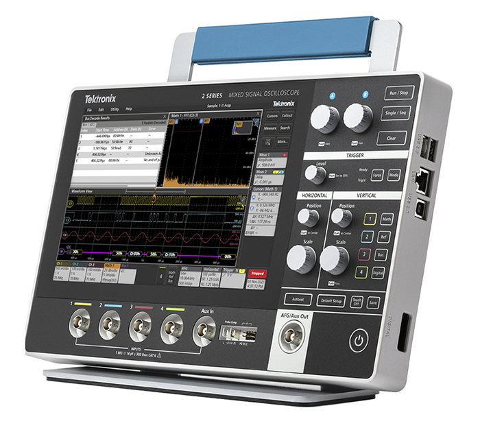

MSO 2 Series EDU Oscilloscope
Empower the next generation of engineers — designed specifically for educational institutions and university labs.
Bandwidth70 / 100 / 200 MHz
Channels2 or 4 + 16 digital
Sample Rate2.5 GS/s · 10 Mpts
Display10.1" HD touch
- Built-in 50 MHz arbitrary function generator standard
- Multichannel FFT + serial protocol triggering and decode
- Ultra-portable 1.8 kg with optional battery pack
- USB & LAN connectivity, VESA mount support, 5-year warranty
R&D, university labs, training rigs
Request demo